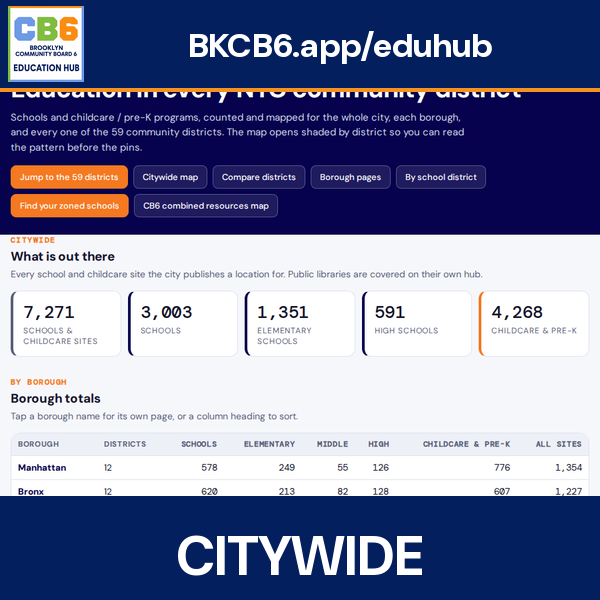
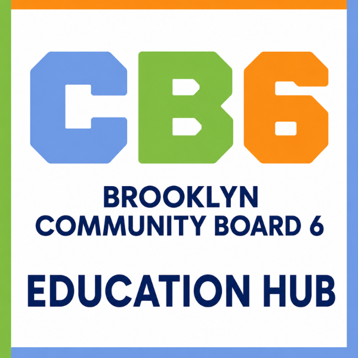
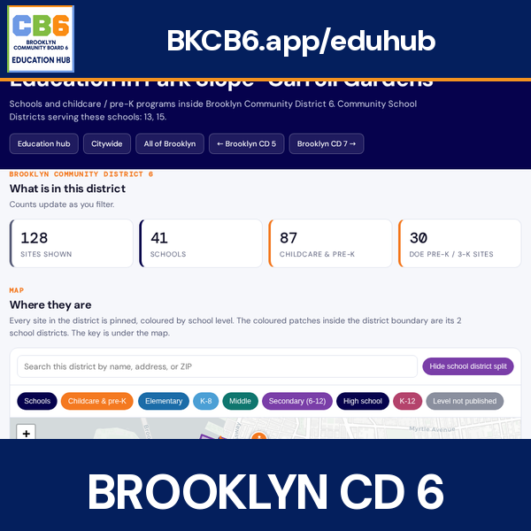
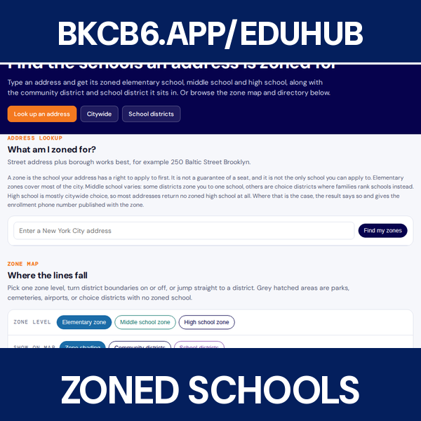
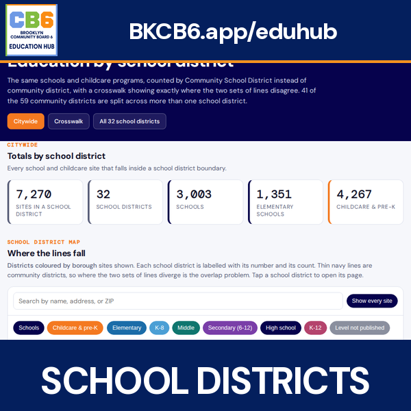
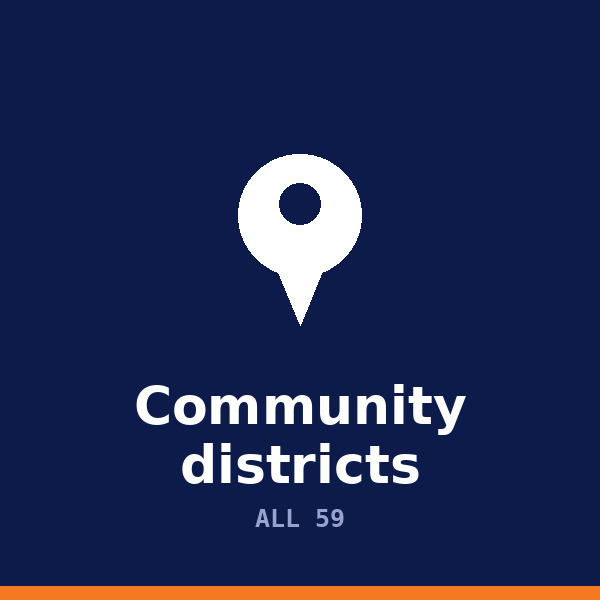
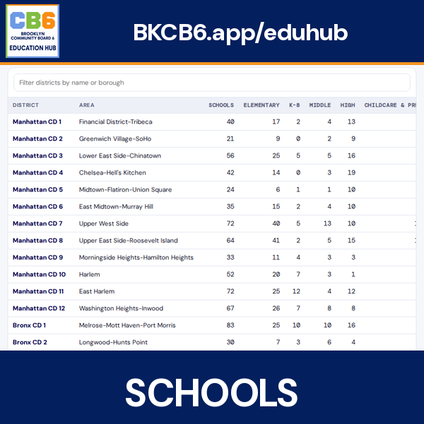
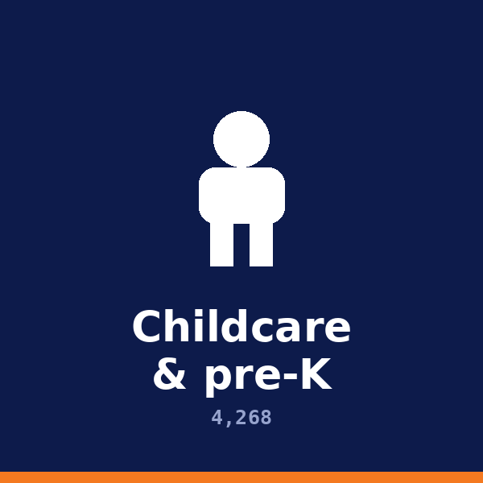
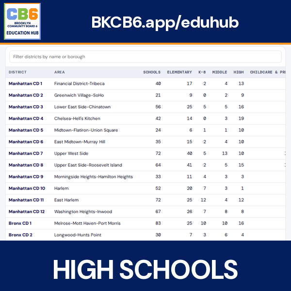
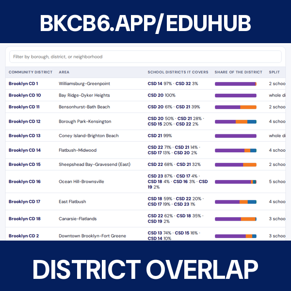

Citywide


New York City draws education on two grids that do not line up. There are 59 community districts, which is how a community board, a district manager and a capital budget see the city. There are 32 community school districts, which is how the Department of Education sees it. 41 of the 59 community districts sit in more than one school district. One is cut five ways.
That mismatch is not a curiosity. It decides which superintendent you call, which CEC votes on your school, and which district a seat count lands in. Brooklyn CB6 is mostly District 15, with a slice in District 13. You cannot read either number correctly without knowing that.
Underneath both grids sit 7,271 schools and childcare sites: 3,003 schools and 4,268 childcare and pre-K programs, every one placed in a district and accounted for, including the three the city publishes without a usable location. Public libraries have their own hub.
Then there are the zones, which is the line families actually live with. 1,129 of them, elementary through high school. Most high school areas are not zoned at all, because high school in this city is mostly citywide choice. The address lookup tells you which of these you are in, and says plainly what it cannot promise.









The three things most people want.
Each borough page shades its community districts by how many sites they hold.
Counts, a pinned map, the school district split, and a full directory for each one.
The DOE grid. Each page lists the community districts it reaches into.
All 29 public schools in the district. Each has a profile and a lot page with its zoning and land use.
All 127 colleges and universities in the five boroughs, from CUNY and SUNY to private and for-profit institutions. Each has a profile and a lot page.